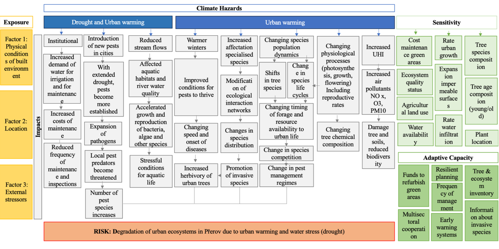
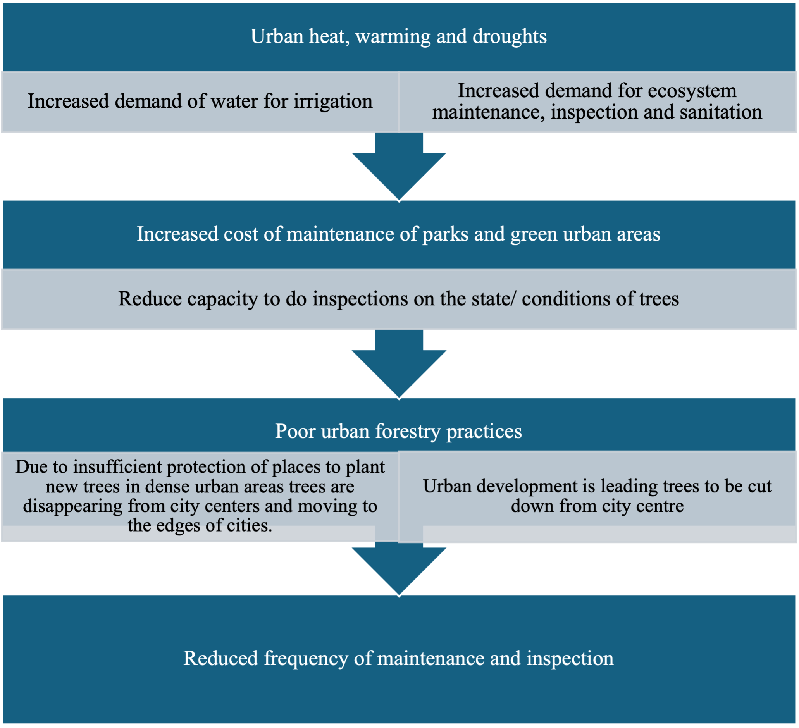
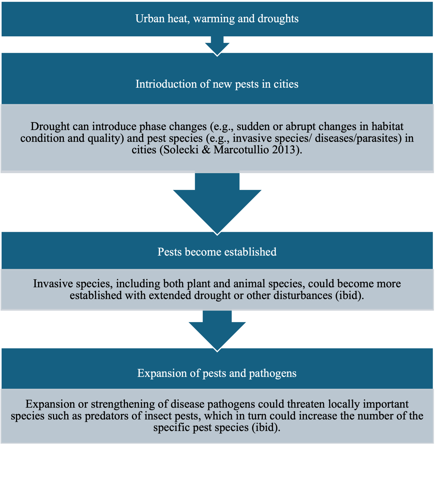
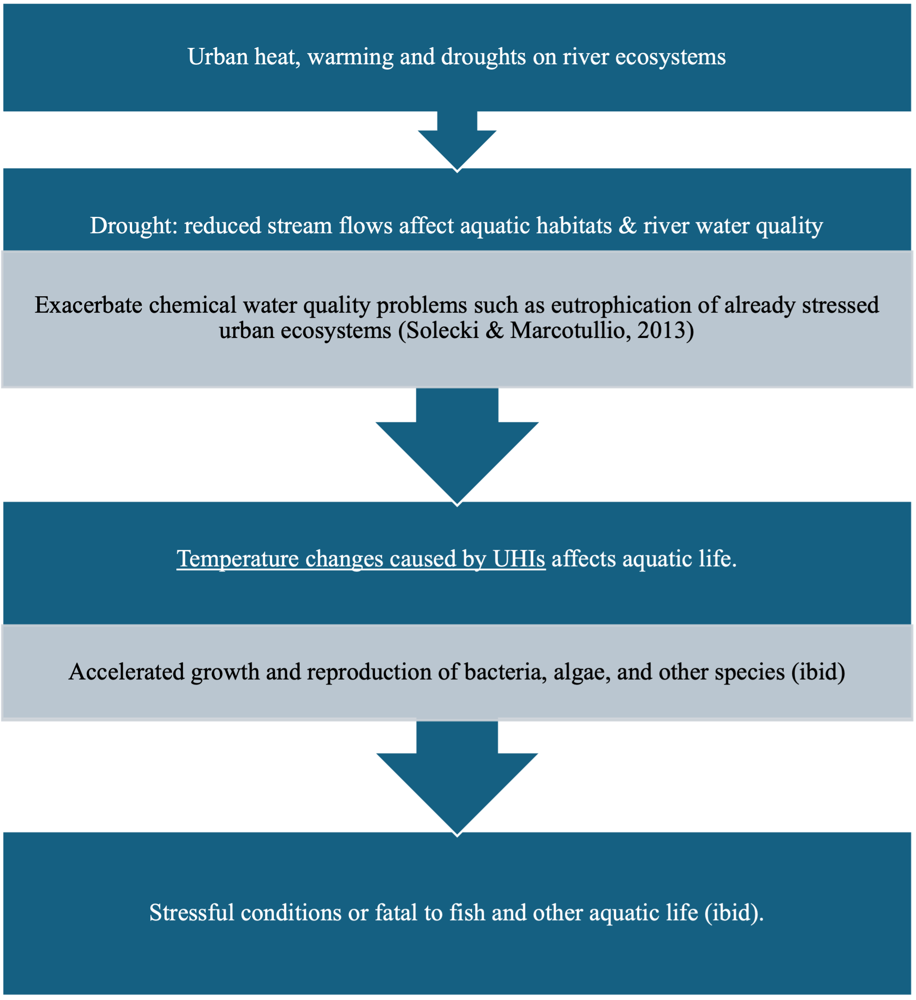
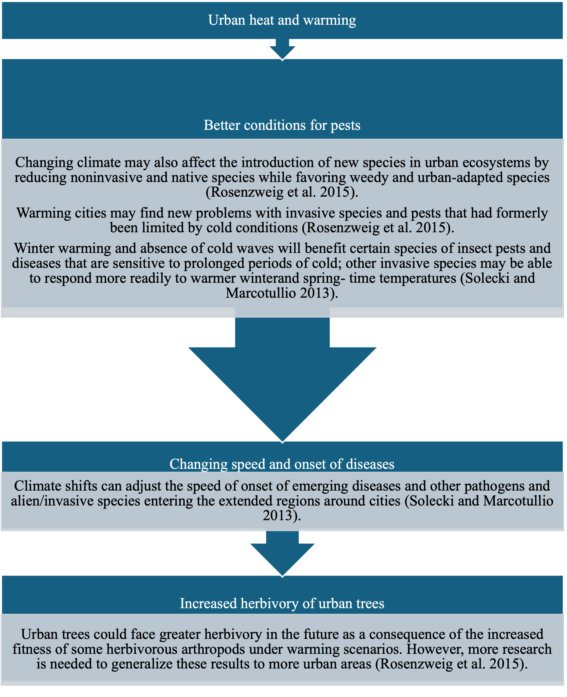
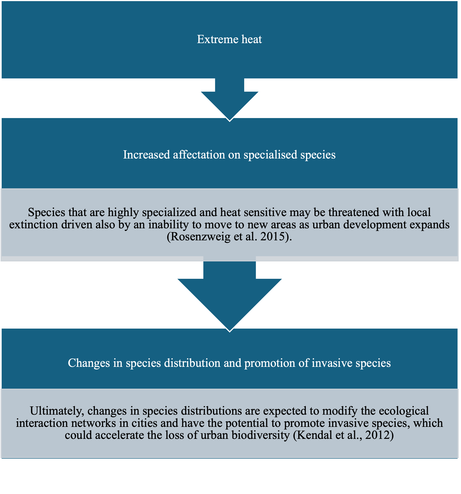
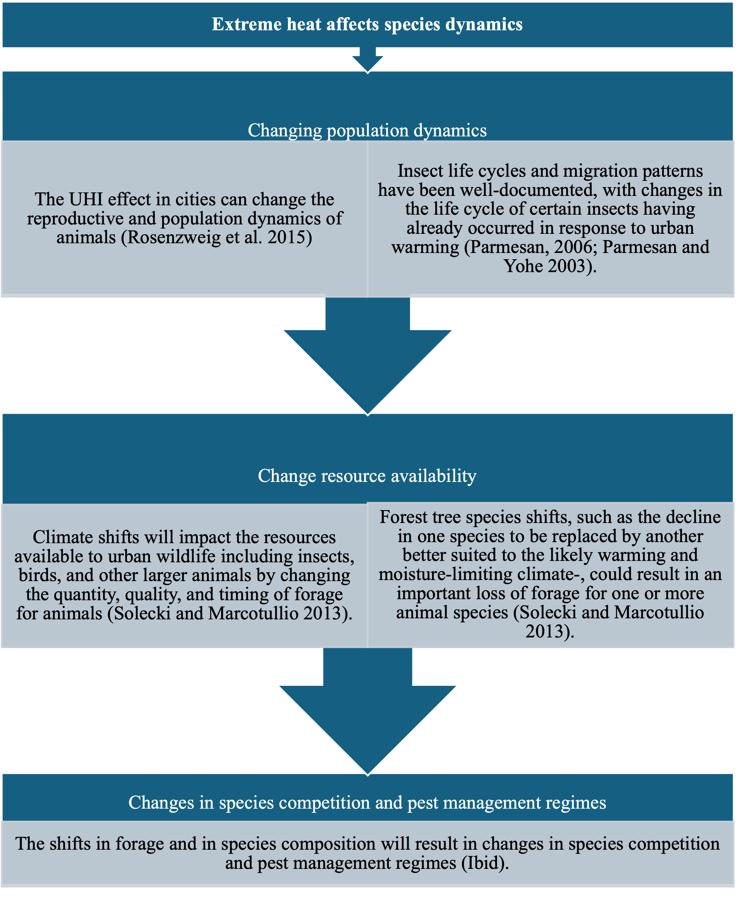
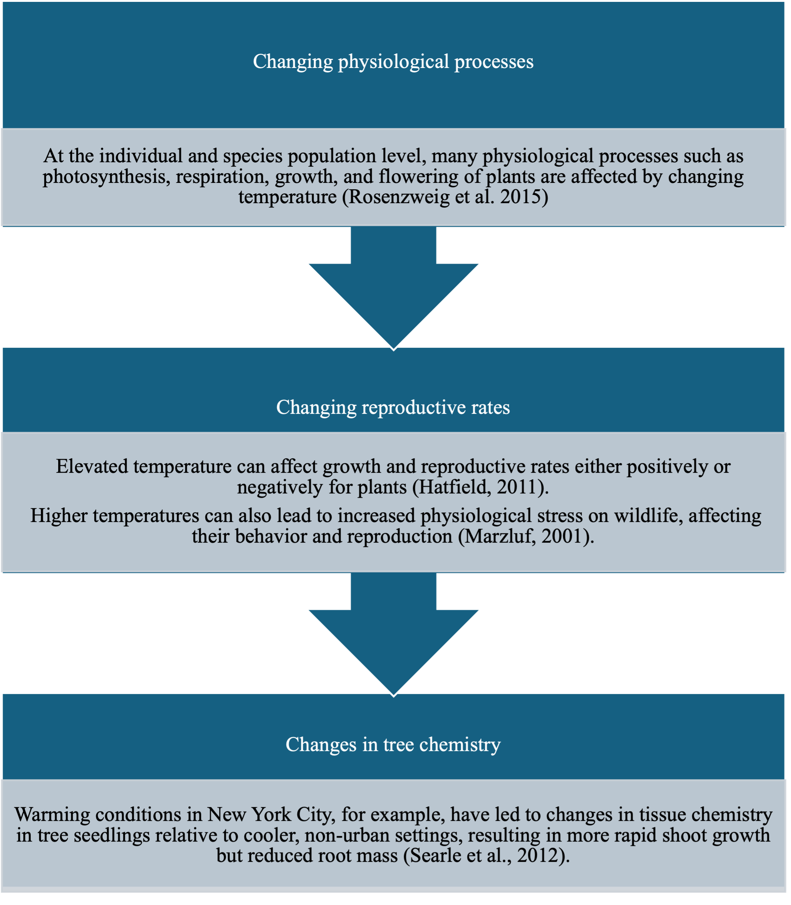
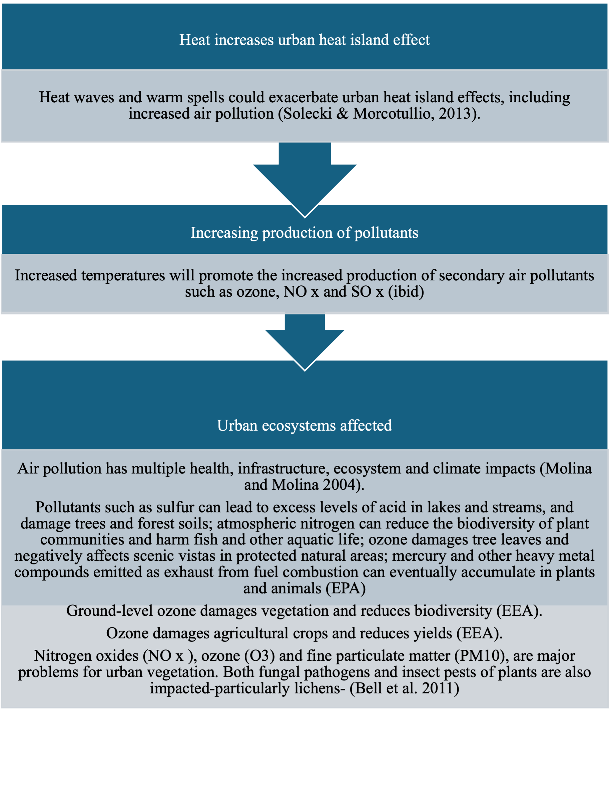

CIC 1 – Urban Ecosystems Degradation (Heat & Drought)¶
Main Risk: Degradation of urban ecosystems due to urban heat and droughts.

Key Policy Issues¶
- Urban heat island effect and drought degrading urban green spaces.
- Loss of ecosystem services (temperature control, recreation areas).
- Introduction of foreign pests and shifts in plant–disease patterns.
- Stress on aquatic life and species distribution changes.
- Need for resilient urban planning, green infrastructure, ecosystem monitoring.
- Address social vulnerability (elderly, health‑compromised groups).
Sequences¶
1. Institutional impacts¶
Reduced maintenance & inspection capacity accelerates degradation.

2. Expansion of pests and pathogens¶
Heat & drought enable spread and persistence.

3. Drought & heat on river ecosystems¶
Aquatic habitat degradation under compounded stress.

4. Heat on pests & tree degradation¶
Tree health declines; new pest assemblages emerge.

5. Promotion of invasive species¶
Specialised species decline; invasive species fill niches.

6. Population dynamics & forage availability¶
Extreme heat alters growth, reproduction, food webs.

7. Plant physiology¶
Stress in photosynthesis, respiration, water regulation reduces resilience.

8. Heat & air pollution¶
Higher temperatures exacerbate pollutant formation impacting vegetation.

Return to Overview.